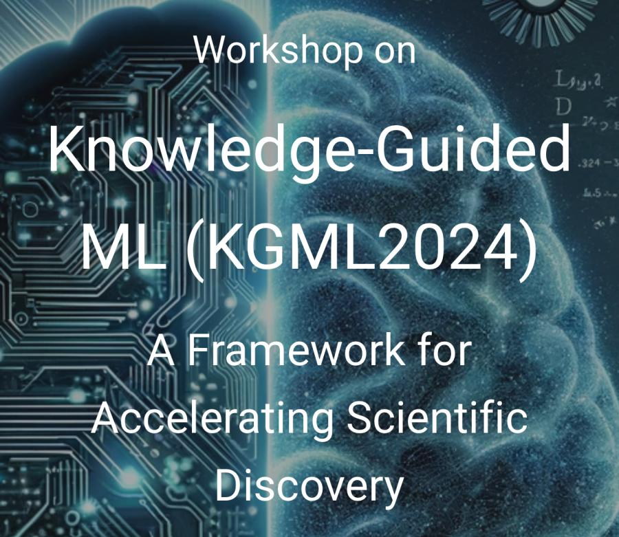
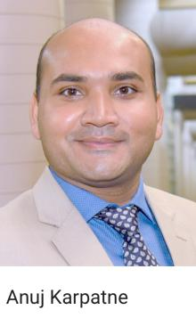

With prominent Imageomics voices involved, the Knowledge-Guided Machine Learning workshop (KGML2024) on Aug. 7 is set to be a pivotal event in advancing the integration of scientific knowledge with machine learning to accelerate scientific discovery.
Open for virtual attendance, the workshop will take place at the University of Minnesota.

Virginia Tech's Associate Professor Anuj Karpatne, a co-organizer of the event, will play a leading role in shaping the agenda and ensuring strong Imageomics representation.
KGML2024 will feature an invited talk by Josef Uyeda on "Accelerating Discovery in Biodiversity Science and Systematics with Knowledge-Guided Machine Learning," as well as a panel discussion titled "KGML in the Age of Generative AI," with Tanya Berger-Wolf as one of the key panelists.
Imageomics is dedicated to leveraging cutting-edge machine learning techniques to extract biological traits from images of organisms. This emerging field is integral to the KGML framework, providing the necessary computational tools and models to accelerate biological discoveries.
The KGML workshop serves as an ideal platform to explore and expand these interdisciplinary approaches, making it a must-attend event for researchers and practitioners in the field.
KGML 2024 will be held in the Thomas Swain Room at the McNamara Alumni Center, with sessions streamed live on Zoom and YouTube for virtual attendees.
Those interested in participating can register for virtual attendance and gain access to the talk recordings via this registration link.
For more details about the event, visit the workshop website.